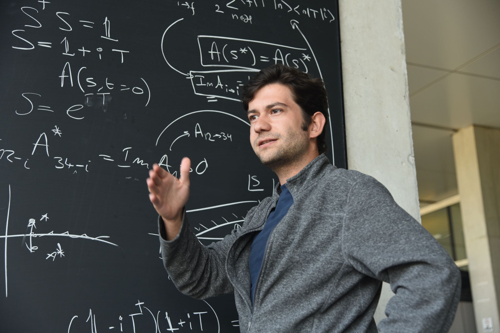

I'm a theoretical physicist and graduate student working at the intersection of high-energy particle physics, cosmology, and quantum gravity. My research explores cosmological and observational significance of quantum gravitational effects during inflation.
Outside of research, I'm passionate about building computational tools that explores the application of concepts to other quantitative fields such as Finance and Biophysics. When I'm not working with equations, I turn to thinking, and retreating into a quiet inner space, most often while walking, where I can reflect on scientific and philosophical ideas, and revisit them with a more critical and unhurried perspective.
I approach physics as something that should be understood from its most elementary structure by unpacking assumptions, derivations, and arguments rather than leaning on authority. I’m drawn to precise, ‘surgical’ discussions that probe the foundations of both physical theories and philosophical ideas, and that test how far formalism and intuition can be made to cohere. Across science and life, I value clarity, honest exchange, and a Kantian commitment to careful reasoning and taking intellectual responsibility responsibility for one’s claims and actions.

I maintain several versions of my CV depending on context. Here, I provide an extended version. Feel free to reach out if you have any questions.